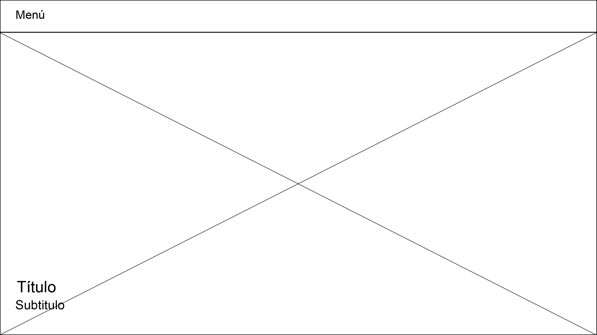

Antecedentes

Web sobre gatos

Blog sobre mascotas
Web que incluye guías prácticas en el cuidado de animales
Página con posibilidad a venta de productos y demás accesos de mascotas
Wireframe de portada
Portada con imágenes deslizantes a los costados. Se incluye el título de la página y una bajada que brevemente explique de qué trata.
Wireframe de página interior
Imágenes con los 3 elementos más importantes al momento de cuidar gatos.
Wireframe de portada
Bajada de información sobre los cuidados, incluye una ilustración por cada sección.